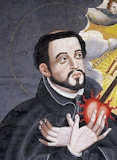

5

答え：フランシスコ・ザビエル
みんなの作った問題
あなた：常陸水戸藩の第2代藩主
Aさん：日本にキリスト教を伝えたひとはだれですか？
Bさん：カトリック神田教会、関町教会、上記の山口サビエル記念聖堂および鹿児島カテ
ドラルザビエル教会に、遺骨が安置されているのは誰か？
Cさん：日本人の印象について、「この国の人びとは今までに発見された国民の中で最高であり、日本人より優れている人びとは、異教徒のあいだでは見つけられないでしょう。彼らは親しみやすく、一般に善良で悪意がありません。驚くほど名誉心の強い人びとで、他の何ものよりも名誉を重んじます。」と評価したのは誰か？
Dさん：